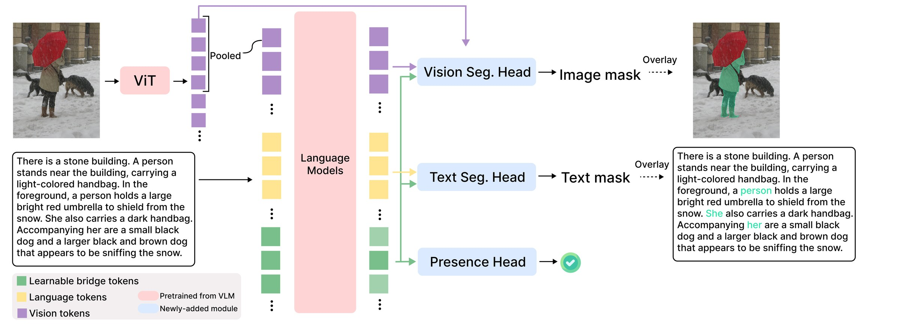

Vision-language grounding connects language to visual content, yet most existing formulations reduce grounding to a unidirectional localization problem; given a prespecified text phrase or category name, identify the corresponding image region. This setup assumes that the relevant linguistic unit is already known, overlooking a more basic challenge in grounded communication: determining which parts of the text are visually referential and how they correspond to entities in the image.
We formulate grounding as bidirectional concept correspondence over an image-text pair. Given an image and its paired text, the goal is to recover all correspondences between visually referential text spans and instance-level image segments, without assuming that the relevant text spans are provided. This formulation unifies common grounding tasks, including phrase grounding, referring expression grounding, and open-vocabulary detection by treating text segmentation, image segmentation, and cross-modal alignment as a single correspondence prediction problem.
To address this task, we introduce ConCor-1, a grounding model built on top of a pretrained vision-language model. It uses learnable bridge tokens to represent candidate image-text correspondences and predicts, for each token, a text mask, an image mask, and a correspondence presence score. To train and evaluate this task, we convert diverse grounding and segmentation datasets into a unified correspondence format. Experiments show that ConCor-1 consistently outperforms baselines, improving correspondence F1 by 48% on the long-caption dataset and by 29% on zero-shot LVIS, where the large category list serves as the text input.

Built on a pretrained Qwen3.5-0.8B VLM, ConCor-1 performs non-autoregressive correspondence prediction. Bridge tokens attend jointly to image and text tokens, with each token representing one candidate image–text correspondence.
Identifies the text tokens belonging to the correspondence, including repeated or co-referring mentions.
Predicts the corresponding instance-level segment with fine spatial detail.
Determines whether the bridge token represents a valid text–image correspondence.
Repurposing existing grounded-caption datasets
Existing grounded-caption datasets are not directly compatible with bidirectional correspondence: co-referring mentions are typically annotated only at first occurrence, and some mentioned entities have no image mask at all. We use an LLM rewriting pipeline that groups co-referring mentions into shared text masks and removes mentions without an associated mask, yielding complete correspondence annotations. Validation benchmarks are then human-filtered.
Training data
Training combines caption-style grounding data with instance-segmentation data. Caption-style data provides free-form language with grounded entities, while segmentation data provides dense instance-level supervision. Box- or point-based annotations are converted to masks when needed.
The converted data is released as UWGZQ/ConCor-1-Data.
We evaluate on three repurposed image-caption benchmarks — COCONut-PanCap, GroundedRef and Flickr30k — and three image-category benchmarks — COCO, LVIS-minival and EntitySeg — where the whole category vocabulary is concatenated into a single text input.
Predictions are matched to ground truth with Hungarian matching and evaluated at three levels: text (TextF1, mSpanIoU), image (MaskF1, mMaskIoU), and joint correspondence (JointF1, mJS). TextF1 and MaskF1 require the corresponding IoU to be ≥ 0.5, while JointF1 requires both text and mask IoU to be ≥ 0.5.
| COCONut-PanCap | GroundedRef | Flickr30k | ||||||||||||||||
|---|---|---|---|---|---|---|---|---|---|---|---|---|---|---|---|---|---|---|
| Method | JointF1 | MaskF1 | TextF1 | mJS | mMaskIoU | mSpanIoU | JointF1 | MaskF1 | TextF1 | mJS | mMaskIoU | mSpanIoU | JointF1 | MaskF1 | TextF1 | mJS | mMaskIoU | mSpanIoU |
| GDINO+SAM | 34.1 | 64.8 | 39.8 | 48.0 | 67.9 | 44.2 | 45.0 | 56.4 | 50.9 | 37.8 | 44.2 | 39.7 | 81.6 | 85.2 | 86.7 | 81.9 | 86.9 | 81.5 |
| MM-GDINO+SAM | 32.2 | 59.5 | 37.4 | 51.1 | 70.8 | 47.4 | 39.8 | 58.1 | 44.3 | 31.9 | 44.2 | 33.3 | 84.6 | 87.7 | 89.6 | 82.6 | 87.3 | 82.3 |
| LLMDet+SAM | 31.5 | 52.8 | 37.9 | 59.1 | 75.4 | 55.7 | 54.6 | 69.0 | 62.8 | 68.1 | 77.9 | 70.1 | 76.7 | 79.6 | 85.4 | 75.3 | 78.7 | 77.1 |
| GPT-5.4 (medium)+SAM | 43.8 | 47.4 | 88.9 | 48.6 | 43.5 | 82.7 | 25.5 | 37.5 | 68.2 | 33.9 | 34.3 | 70.8 | 37.3 | 43.4 | 86.6 | 44.7 | 41.4 | 87.0 |
| Florence-2 | 36.7 | 53.4 | 53.6 | 47.9 | 55.8 | 56.7 | 52.6 | 61.2 | 79.2 | 56.4 | 55.2 | 77.7 | 68.7 | 70.1 | 92.8 | 69.4 | 61.6 | 88.9 |
| GLaMM | 2.5 | 39.1 | 3.0 | 11.9 | 27.4 | 8.0 | 6.1 | 47.3 | 10.0 | 18.4 | 32.8 | 16.9 | 53.1 | 69.1 | 59.5 | 55.4 | 60.3 | 58.2 |
| Qwen3.5-FT | 59.9 | 63.4 | 93.1 | 63.3 | 55.6 | 87.9 | 51.5 | 56.3 | 82.1 | 49.7 | 45.8 | 77.5 | 70.2 | 72.6 | 95.2 | 69.1 | 60.3 | 95.1 |
| ConCor-1 (random init.) | 51.8 | 59.4 | 67.6 | 63.2 | 63.6 | 77.9 | 32.4 | 43.4 | 56.9 | 44.6 | 48.1 | 70.5 | 55.0 | 61.1 | 72.7 | 64.4 | 62.3 | 83.7 |
| ConCor-1 | 88.8 | 91.9 | 93.4 | 89.5 | 87.0 | 95.7 | 70.3 | 76.4 | 78.7 | 69.6 | 68.8 | 78.7 | 91.4 | 92.4 | 95.1 | 91.8 | 88.6 | 97.4 |
| COCO | LVIS-minival | EntitySeg | ||||||||||||||||
|---|---|---|---|---|---|---|---|---|---|---|---|---|---|---|---|---|---|---|
| Method | JointF1 | MaskF1 | TextF1 | mJS | mMaskIoU | mSpanIoU | JointF1 | MaskF1 | TextF1 | mJS | mMaskIoU | mSpanIoU | JointF1 | MaskF1 | TextF1 | mJS | mMaskIoU | mSpanIoU |
| GDINO+SAM | 63.0 | 66.5 | 73.3 | 76.0 | 71.3 | 90.7 | 15.3 | 22.4 | 17.7 | 33.1 | 47.8 | 35.7 | 21.5 | 30.6 | 27.0 | 36.9 | 45.5 | 43.3 |
| MM-GDINO+SAM | 65.7 | 68.7 | 75.6 | 77.1 | 72.0 | 91.6 | 9.4 | 18.4 | 12.4 | 53.6 | 75.7 | 56.8 | 29.4 | 36.9 | 37.0 | 45.5 | 51.7 | 55.7 |
| LLMDet+SAM | 62.4 | 65.9 | 72.1 | 77.2 | 72.2 | 91.9 | 4.3 | 8.7 | 5.8 | 53.2 | 76.0 | 56.5 | 22.2 | 31.7 | 29.2 | 44.5 | 56.2 | 55.2 |
| GPT-5.4 (medium)+SAM | 34.2 | 35.1 | 81.7 | 39.7 | 32.5 | 80.0 | 17.2 | 20.9 | 43.0 | 25.8 | 26.3 | 53.7 | 20.2 | 30.1 | 42.4 | 30.7 | 34.4 | 51.9 |
| Florence-2 | 9.8 | 14.8 | 11.9 | 7.6 | 10.1 | 9.1 | 6.2 | 17.7 | 8.2 | 17.0 | 38.0 | 19.6 | 11.8 | 20.9 | 23.5 | 21.2 | 28.8 | 32.1 |
| GLaMM | 38.5 | 40.8 | 45.7 | 33.1 | 31.5 | 38.9 | 23.1 | 24.0 | 29.7 | 19.4 | 18.4 | 24.1 | 22.2 | 23.1 | 26.0 | 18.3 | 17.4 | 21.2 |
| Qwen3.5-FT | 39.4 | 41.2 | 51.4 | 37.3 | 37.4 | 48.3 | 3.9 | 26.9 | 5.2 | 4.4 | 28.0 | 5.2 | 31.1 | 38.6 | 47.6 | 33.1 | 38.0 | 43.6 |
| ConCor-1 (random init.) | 15.1 | 32.8 | 22.9 | 25.1 | 49.5 | 35.6 | 0.1 | 18.5 | 0.2 | 0.2 | 32.5 | 0.3 | 2.8 | 20.4 | 5.4 | 4.3 | 26.6 | 6.5 |
| ConCor-1 | 72.4 | 74.3 | 81.0 | 79.8 | 74.2 | 92.7 | 29.9 | 41.4 | 33.8 | 39.8 | 51.4 | 45.0 | 49.8 | 59.9 | 59.1 | 48.9 | 53.7 | 57.4 |
@article{zhang2026concor,
title = {Vision-Language Grounding as Bidirectional Concept Correspondence},
author = {Zhang, Jieyu and Gao, Ziqi and Zettlemoyer, Luke and Krishna, Ranjay},
year = {2026}
}